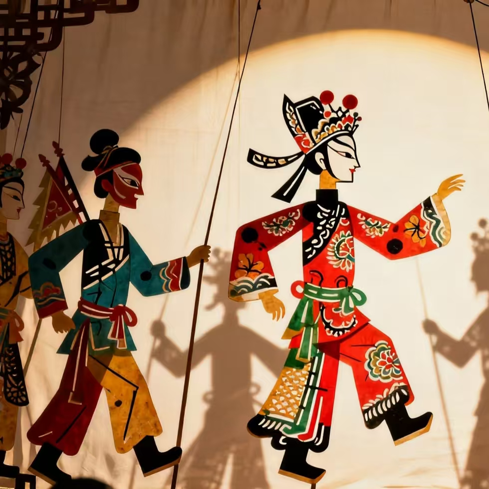

皮影戏
中国最早的"动画片" · 人类非物质文化遗产

一、技艺简介
皮影戏，又称"影子戏"或"灯影戏"，是以兽皮或纸板做成人物剪影，在灯光照射下用隔布进行表演的民间戏剧形式。皮影戏集雕刻、绘画、音乐、表演于一体，是中国最古老的戏剧艺术之一，被誉为"中国最早的动画片"。
皮影戏融合了民间美术、戏曲音乐和口头文学，是中国民间艺术的瑰宝。皮影艺人一人操纵多个皮影人物，配合唱腔和乐器伴奏，在幕布上演绎千年故事。
二、历史渊源
皮影戏起源于西汉时期，距今已有两千多年历史。唐宋时期皮影戏已相当普及，元代传入西亚和欧洲。明清时期皮影戏达到鼎盛，形成了陕西、河北、四川、广东等不同地域流派。
2011年，中国皮影戏被列入联合国教科文组织人类非物质文化遗产代表作名录。
三、主要流派
- 陕西皮影：粗犷豪放，造型古朴，西北风格鲜明
- 河北皮影：精细雅致，雕刻精美，华北风格代表
- 四川皮影：色彩斑斓，造型生动，蜀地特色浓郁
- 广东皮影：华丽精致，融合岭南文化特色
四、制作工序
- 选皮：精选牛皮或驴皮，质地均匀、坚韧耐用
- 制皮：浸泡、刮薄、晾干，使皮革透明
- 画稿：在皮革上绘制人物形象
- 雕刻：用刻刀雕刻出人物轮廓和细节
- 染色：用矿物颜料着色，色彩鲜艳持久
- 装订：用丝线连接各部件，安装操纵杆
五、艺术特色
- 灯影之美：灯光透过皮影投射到幕布上，形成梦幻般的光影效果
- 雕刻之精：皮影雕刻精细入微，人物服饰、表情栩栩如生
- 表演之活：一人操纵多人，配合唱腔，生动传神
- 故事之丰：演绎历史故事、神话传说、民间传奇
"一口述说千古事，双手舞动百万兵。灯影之间，千年故事在幕布上复活；唱腔之中，中国智慧在光影间流淌。"